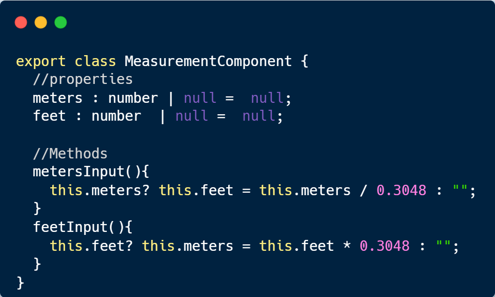

1. Syfte
Syftet med det här arbetet är att bygga en enkel SPA (Single Page Application) med hjälp av ramverket Angular och
TypeScript. Ett annat syfte är att kunna använda det så kallade "Två-väg data-binding" för att dynamiskt
kunna rendera resultaten.
2. Konstruktion och utvecklingsmiljö
Teknik som användes för att bygga webbapplikationen
- Visual Studio Code eller en annan IDE.
- Webbläsare, till exempel Chrome eller FireFox.
- NodeJS
- Angular
npm install -g @angular/cli
För att skapa ett nytt projekt öppna terminalen och skriv följande kommandon:
ng new my-angular-app
Navigera sedan till projektmappen:
cd my-angular-app
För att starta utvecklings-servern och öppna det på en webbläsare:
ng serve --open
Ett angular-projekt består av mindre komponenter, rotkomponenten heter app.componenet. Där varje komponent består av en HTML-fil och en CSS-fil för lokalstyling samt en fil för TypeScript specifkationer och en vanlig TypeScript-fil där man kan göra sina import, specificera vilka angular-paket man vill använda i den här komponenten samt möjligheten att skriva sin egen logik och detta kan man göra under själva klassen för komponenten.
För att skapa en ny komponent skriv:
ng generate component NamnPåKomponent
I det här projektet användes en komponent för varje undersida samt komponenter för huvudet och foten på sidan (header och footer). Sedan skapades två olika komponenter för varje typ av kalkylator (en measurement och en temperatur komponent) och importerades till undersidan "kalkylator".
Här är ett exempel på TypeScript-logiken som användes under measurement-komponenten för att skapa längdkalkylatorn:

Och för att knuta de variablerna till själva HTML-elemenet användes ett angular paket som heter
"FromsModel" genom att importera det i den komponent man vill använda det i och inkludera en så kallad ngModel-attribut i det önskade HTML-elementet.
I följande kodsnuttet binds input-elementet för meter med variablen meter i det förra kodsnuttet.
Detta ersätter det vanliga sättet
getElementById men det finns en stor skillnad. FormsModel tillåter använding av en angularfunktionalitet som kallas för "två-väg data-binding". På detta sätt kan man enkelt manipulera DOM och enkelt ha ett dynamiskt innehåll på sin webbapplikation.
3. Slutsats
Jag tycker att ramverket Angular är en mycket stark och användbar teknik som inte bara underlättar utvecklingsprocessen utan även ger möjligheten att använda många användabara funktionaliteter. Dessutom skapar det ett nytt sätt att tänka när det gäller utveckling och logik. Att kunna använda komponenter och bygga webbsidan med dem leder till ett annorlunda tankesätt, där varje komponent har sin egen logik, stil och innehåll och påverkar inte andra komponenter. Möjligheten att återanvända komponenten är därför ett otroligt kraftull sätt att utveckla och dessutom gör det enklare för redigering av stil och logik.
Att skapa single-page applications är också mycket kraftfullt. Fördelen är då en snabbare rendering och en utmärkt användarupplevelse. Att bygga och utveckla ett projekt med Angular och TypeScript är ett mycket bättre sätt att gå tillväga med än att använda ren vanilla JavaScript enligt min åsikt, särskilt med de tydliga felmeddelanden man får och alla andra funktionaliteter.